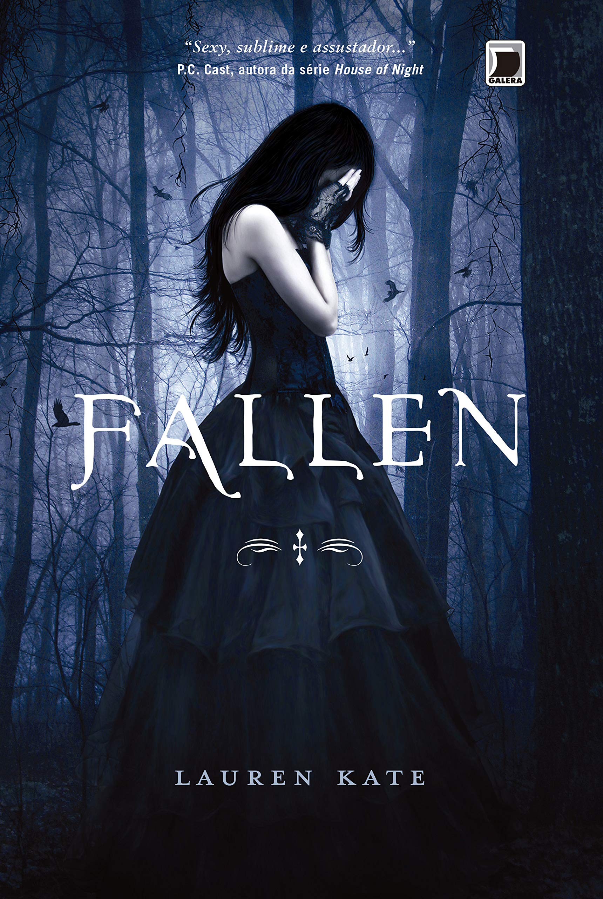

Fallen

Detalhes do Produto
Editora: Galera; 69ª edição (30 julho 2010)
Idioma: Português
Capa comum; 406 páginas
ISBN-10:8501089621
ISBN-13:978-8501089625
Idade de leitura: 15 anos e acima
Dimensões:22.6 x 15 x 2.6 cm
Ranking dos mais vendidos: Nº 4,841 em Livros (Conheça o Top 100 na categoria Livros) Nº 167 em Contos Literatura e Ficção Nº 358 em Livros de Literatura e Ficção para Adolescentes
Sobre o autor
Lauren Kate cresceu em Dallas, estudou em Atlanta e começou a carreira de escritora em Nova York. Atualmente, é professora e viveem uma antiga fazenda na Califórnia.
Sinopse
Em Fallen, acompanhamos a adolescente Luce, mandada para um reformatório ― apropriadamente batizado de Sword & Cross ― após a morte do namorado em um incêndio misterioso. Ela suspeita que estranhas sombras negras, que a atormentam desde a infância, são as verdadeiras responsáveis. Mas quem acreditaria nela?
Na escola, ela encontra o etereamente belo Daniel Grigori, que desperta uma estranha sensação de reconhecimento: único ponto luminoso num lugar onde celulares são proibidos e há câmeras de vigilância por todos os cantos. Mas tanta luz hipnotiza a menina, atraída pelo rapaz como uma mariposa pela chama. Ele tenta se manter afastado de Luce, mas também não consegue. E a verdade promete separá-los como tantas outras vezes ― com a morte de Luce.
Amantes destinados a se encontrar e se perder vida após vida, século após século.
Adicionar ao Carrinho